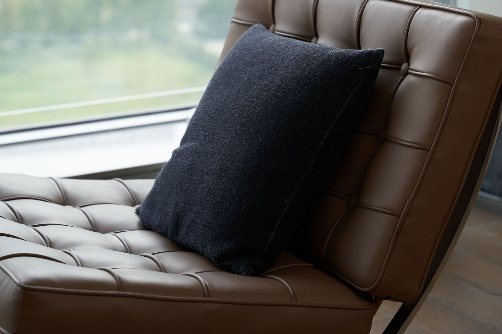

Home / Guides / Cushions & Lumbar

Best Seat Cushions & Lumbar Pillows (2026): Raise a Low Chair, Fix a Deep Seat
Not everyone works from an adjustable office chair. If you're at a dining chair or another fixed-height seat, a standard 29–30 in desk is often too high to type at comfortably, and a seat cushion is the cheapest way to bring yourself up to it. Lumbar pillows solve a different problem: a seat that's too deep for your legs, or a backrest that doesn't support your lower back. This guide shows how thick a cushion you need for your height and compares four popular cushions and pillows sold on Amazon US.
Quick picks
| Product | Best for | Amazon |
|---|---|---|
| Everlasting Comfort Memory Foam Seat Cushion | Everyday comfort with a small lift | Check price |
| MABOZOO Extra Thick Booster Cushion | Biggest lift for fixed-height chairs | Check price |
| Everlasting Comfort Lumbar Support Pillow | Lower-back support on any chair | Check price |
| Samsonite Lumbar Support Pillow | Compact pillow for chair and car | Check price |
How to choose
1. Adjustable chair? Raise the chair first
If your office chair has a height lever, use that to bring your elbows level with the desk before buying a cushion. A booster cushion is mainly for fixed-height chairs (dining and kitchen chairs, some lounge and gaming chairs) or chairs that don't go high enough.
2. Work out how much lift you need
Your elbows should be level with the desktop. The table below shows how thick a cushion you need on a typical 18 in dining chair at a 29.5 in desk, from the ratios in our calculator.
3. Foam compresses
A cushion's listed thickness is measured uncompressed. Memory foam sinks under your weight, so expect less lift than the number on the listing, and pick a little thicker than you need.
4. Raising the seat often means a footrest
Once you sit higher, shorter people's feet may no longer reach the floor. The table shows how big a footrest you'd need; see our footrest guide.
5. Lumbar pillows also shorten the seat
A lumbar pillow moves you forward on the seat by its thickness. That's useful if the seat edge presses behind your knees, a common problem for shorter people on deep chairs, but it can make a seat feel too short if you're tall.
Specs side by side
| Product | Type | Size | Material | Attaches | Warranty | Price tier |
|---|---|---|---|---|---|---|
| Everlasting Comfort Memory Foam Seat Cushion | Seat cushion | About 17.3 × 14 × 3.15 in (Large) | Memory foam, washable cover | Anti-slip base | Not listed | Budget |
| MABOZOO Extra Thick Booster Cushion | Booster cushion | 18 × 16 × 6 in | Memory foam over sponge | Non-slip base | Not listed | Budget |
| Everlasting Comfort Lumbar Support Pillow | Lumbar pillow | Check listing | Memory foam, mesh cover | Two adjustable straps (chairs up to 32 in wide) | Lifetime replacement (per listing) | Budget |
| Samsonite Lumbar Support Pillow | Lumbar pillow | 14 × 13.5 × 4 in | Memory foam | Adjustable strap | Not listed (standard returns) | Budget |
From Amazon listings and manufacturer warranty notes; see the sources under each product. Sizes are for the variant linked.
How thick a cushion you need
To type comfortably, your elbows should be level with the desktop. Here's the seat height that puts them there at a standard 29.5 in desk, how much a cushion has to add on a typical 18 in dining chair, and how tall a footrest you'd then need so your feet are supported (from the ratios in our calculator, regular shoes).
| Your height | Seat height for this desk | Cushion needed (18 in chair) | Then a footrest of |
|---|---|---|---|
| 4'10" | 21.1″ | 3.1″ | 5.9″ |
| 5'0" | 20.8″ | 2.8″ | 5.1″ |
| 5'2" | 20.5″ | 2.5″ | 4.3″ |
| 5'4" | 20.2″ | 2.2″ | 3.6″ |
| 5'6" | 19.9″ | 1.9″ | 2.8″ |
| 5'8" | 19.6″ | 1.6″ | 2.0″ |
| 5'10" | 19.4″ | 1.4″ | 1.2″ |
| 6'0" | 19.1″ | 1.1″ | None |
| 6'2" | 18.8″ | 0.8″ | None |
| 6'4" | 18.5″ | None needed | None |
| 6'6" | 18.2″ | None needed | None |
| 6'8" | 17.9″ | None needed | None |
Cushion thickness is after compression; memory foam sinks under your weight, so choose a cushion somewhat thicker than the figure. Dining chair seats vary (about 17–19 in); measure yours from the floor to the top of the seat.
The shortlist
Everyday comfort with a small lift
1. Everlasting Comfort Memory Foam Seat Cushion
One of the best-selling seat cushions on Amazon, with over 100,000 ratings. The large size is listed at about 17.3 × 14 in and just over 3 in thick, in memory foam with a removable, machine-washable cover and an anti-slip base. It suits gaps of an inch or two once the foam settles; it's more about comfort than height.
What we like
- Huge number of owner ratings
- Washable cover
- Light and portable
Trade-offs
- Compresses to well under its listed thickness
- Not enough lift for big gaps
Skip it if: You need to come up more than about 2 in.
Check Everlasting Comfort Memory Foam Seat Cushion on Amazon →Spec sources (checked Nov 22, 2026): Amazon listing
Biggest lift for fixed-height chairs
2. MABOZOO Extra Thick Booster Cushion
A booster cushion sold specifically to raise seat height: 18 × 16 in and 6 in thick in the version linked (a 5 in version is also listed), with a memory foam top layer over a firmer sponge base. It's the option for a dining chair at a standard desk when you need several inches. Its ratings are lower than the Everlasting Comfort cushion's, so check recent reviews for how well it holds its shape.
What we like
- Thick enough for big gaps
- Firmer base layer
- Wide seat area
Trade-offs
- Lower average rating
- You'll likely need a footrest too
- Raises you above some chairs' armrests
Skip it if: Your chair is height-adjustable, or you only need an inch or two.
Check MABOZOO Extra Thick Booster Cushion on Amazon →Spec sources (checked Nov 22, 2026): Amazon listing
Lower-back support on any chair
3. Everlasting Comfort Lumbar Support Pillow
A contoured memory-foam lumbar pillow with two adjustable straps that the listing says fit chairs up to 32 in wide, and a removable, washable mesh cover. It's one of the most-reviewed lumbar pillows on Amazon, and Everlasting Comfort lists a lifetime replacement guarantee.
What we like
- Two straps keep it in place
- Washable mesh cover
- Lifetime replacement guarantee
Trade-offs
- Pushes you forward on the seat
- Dimensions aren't clearly listed
Skip it if: You're tall and your seat already feels short.
Check Everlasting Comfort Lumbar Support Pillow on Amazon →Spec sources (checked Nov 22, 2026): Amazon listing
Compact pillow for chair and car
4. Samsonite Lumbar Support Pillow
A smaller memory-foam lumbar pillow, listed at 14 × 13.5 in and 4 in deep, with an adjustable strap. Its compact size makes it easy to move between a desk chair and a car seat.
What we like
- Compact and portable
- Adjustable strap
- Well reviewed
Trade-offs
- Single strap
- 4 in depth shortens the seat noticeably
Skip it if: You want a long warranty, or your chair seat is already shallow.
Check Samsonite Lumbar Support Pillow on Amazon →Spec sources (checked Nov 22, 2026): Amazon listing
FAQ
How do I raise my chair height without buying a new chair?
If it has a height lever, raise it first. If it's a fixed-height chair, a booster cushion adds a few inches; the table above shows how much you need. Pair it with a footrest if your feet stop reaching the floor.
How thick should a seat cushion be?
Thick enough to bring your elbows level with your desk, plus a little extra because foam compresses. On a dining chair at a standard desk that's usually 1–3 in, depending on your height.
Do lumbar pillows help with a seat that's too deep?
Yes. A lumbar pillow moves you forward on the seat by its thickness, which can stop the seat edge pressing behind your knees. If you're tall, it can make the seat feel too short instead.
Can I use a seat cushion on an office chair?
Yes, but it raises you above the chair's armrests and changes how the backrest meets your back, so lower the chair to compensate if it's adjustable.